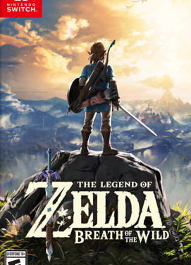

The Legend of Zelda: Breath of the Wild - Switch
The Legend of Zelda: Breath of the Wild para Nintendo Switch es un juego de acción y aventuras de Nintendo, la última entrega de la larga serie de The Legend of Zelda. El juego ofrece un formato de mundo abierto, con amplia libertad y pocas instrucciones para los jugadores. La jugabilidad consiste en recolectar utensilios y materiales, completar misiones secundarias y resolver ingeniosos puzles y mazmorras.
Gran parte del encanto de este juego reside en el hecho de que premia la experimentación, por lo que te animamos a que te salgas del guión y explores el inmenso mapa a profundidad. La historia principal del juego puede ser completada de manera no lineal, así que puedes elegir cuándo y cómo completar cada una de las misiones, en lugar de verte obligado a seguir un curso de acción restringido.
Sus espléndidos gráficos, los motores físicos y las actuaciones de voces de primera calidad le han valido el premio al Juego del Año, e incluso ha sido considerado como uno de los mejores videojuegos de todos los tiempos, además de ser – como es lógico – el juego más vendido de toda la historia de la franquicia de Zelda.
El reino de Hyrule tiene a un antiguo enemigo, llamado Ganon, que ha sido atrapado en el interior de un castillo (aproximadamente cien años antes del inicio del juego).
Como siempre, el protagonista del juego es Link, que puede explorar las tierras de Hyrule con una amplia gama de acciones que van desde el nado hasta el senderismo o el trote; incluso puede escalar o planear por los aires utilizando un parapente. Sin embargo, deberás estar al tanto del indicador de resistencia de Link, ya que algunas de estas acciones lo agotarán más rápido que otras.
El juego se desarrolla en un mundo abierto que ha sido cuidadosamente pensado, permitiendo a los jugadores llevar a cabo un gran número de maniobras interactuando con los elementos y las condiciones del entorno. Por ejemplo, puedes atraer relámpagos hacia tus enemigos arrojándoles objetos metálicos o dejar caer enormes rocas por colinas para aplastarlos. ¡Pero no esperes demasiado tiempo para arrojarles los objetos metálicos o no uses prendas de metal en medio de una tormenta, pues entonces serás tú el que acabe freído por un relámpago!
Siempre tendrás algo que hacer en este juego, y más vale que no caigas en la tentación de dormirte en tus laureles una vez que hayas conseguido llenar tu alforja de armamento, ya que, a diferencia de la mayoría de otros juegos, las armas y los escudos se desgastan con el tiempo, hasta romperse totalmente. Así que en todo momento debes estar atento a los repuestos que puedas encontrar a lo largo del terreno, o a los materiales que puedas utilizar para fabricarlos. Esta es una lista de todos los elementos a tener en cuenta:
Armas: estas pueden componerse de muchos materiales, desde un palo de madera hasta un hacha o una vieja espada, prácticamente todo lo que encuentres por el camino puede ser utilizado como un arma. Los escudos y las armas de madera pueden ser utilizados como leña para fuego cuando sea necesario, dándoles un propósito provechoso, sobre todo al final de su vida útil, cuando comienzan a desgastarse
Alimentos: esto se obtienen mediante la caza de animales, la recolección de bayas e incluso utilizando partes de los cuerpos de tus enemigos. Los artículos comestibles pueden ser cocinados siguiendo las recetas que se encuentran en el juego para crear pociones y comidas que sirven como potenciadores temporales de energía, dándole a Link un toque de vitalidad o simplemente rellenando sus indicadores de salud y resistencia.
Santuarios: asegúrate de investigar a profundidad cada uno de los santuarios que encuentres por el camino. Algunos de ellos pueden requerir que lleves a cabo un combate o resuelvas un ingenioso puzle, pero generalmente todas las recompensas valen la pena. Una vez que hayas superado sus pruebas los santuarios también te ofrecerán Orbes de Espíritu, los cuales pueden ser intercambiados para mejorar tu límite máximo de salud o resistencia.
Algunos pequeños acertijos dispersos por el mapa te proporcionarán Semillas Korok, que pueden ser intercambiadas por artículos de inventario o para mejorar la capacidad de tu alforja
Torres y Puntos de Transporte: activar todas las torres del mapa es algo vital para avanzar en el juego. Esto te permitirá teletransportarte entre distintos puntos, además de revelar nuevas e inexploradas zonas del mapa. En un principio, el nombre de las nuevas regiones no aparecerá en el mapa, pero una vez que las explores su nombre será añadido al mismo
Si el jugador completa ciertas misiones, incluyendo la liberación de las cuatro Bestias Divinas y la localización de la Espada Maestra, entre otras, desbloqueará un final secreto en el que Link y Zelda se dan cuenta de que deben trabajar en equipo para reconstruir el reino de Hyrule.
Acerca del Juego
Gran parte del encanto de este juego reside en el hecho de que premia la experimentación, por lo que te animamos a que te salgas del guión y explores el inmenso mapa a profundidad. La historia principal del juego puede ser completada de manera no lineal, así que puedes elegir cuándo y cómo completar cada una de las misiones, en lugar de verte obligado a seguir un curso de acción restringido.
Sus espléndidos gráficos, los motores físicos y las actuaciones de voces de primera calidad le han valido el premio al Juego del Año, e incluso ha sido considerado como uno de los mejores videojuegos de todos los tiempos, además de ser – como es lógico – el juego más vendido de toda la historia de la franquicia de Zelda.
¿Cuál es la historia del juego?
El reino de Hyrule tiene a un antiguo enemigo, llamado Ganon, que ha sido atrapado en el interior de un castillo (aproximadamente cien años antes del inicio del juego).
Ponte en la piel de Link y explora
Como siempre, el protagonista del juego es Link, que puede explorar las tierras de Hyrule con una amplia gama de acciones que van desde el nado hasta el senderismo o el trote; incluso puede escalar o planear por los aires utilizando un parapente. Sin embargo, deberás estar al tanto del indicador de resistencia de Link, ya que algunas de estas acciones lo agotarán más rápido que otras.
El juego se desarrolla en un mundo abierto que ha sido cuidadosamente pensado, permitiendo a los jugadores llevar a cabo un gran número de maniobras interactuando con los elementos y las condiciones del entorno. Por ejemplo, puedes atraer relámpagos hacia tus enemigos arrojándoles objetos metálicos o dejar caer enormes rocas por colinas para aplastarlos. ¡Pero no esperes demasiado tiempo para arrojarles los objetos metálicos o no uses prendas de metal en medio de una tormenta, pues entonces serás tú el que acabe freído por un relámpago!
Potenciadores y objetos de valor
Siempre tendrás algo que hacer en este juego, y más vale que no caigas en la tentación de dormirte en tus laureles una vez que hayas conseguido llenar tu alforja de armamento, ya que, a diferencia de la mayoría de otros juegos, las armas y los escudos se desgastan con el tiempo, hasta romperse totalmente. Así que en todo momento debes estar atento a los repuestos que puedas encontrar a lo largo del terreno, o a los materiales que puedas utilizar para fabricarlos. Esta es una lista de todos los elementos a tener en cuenta:
Algunos pequeños acertijos dispersos por el mapa te proporcionarán Semillas Korok, que pueden ser intercambiadas por artículos de inventario o para mejorar la capacidad de tu alforja
Cumple con la misión secreta
Si el jugador completa ciertas misiones, incluyendo la liberación de las cuatro Bestias Divinas y la localización de la Espada Maestra, entre otras, desbloqueará un final secreto en el que Link y Zelda se dan cuenta de que deben trabajar en equipo para reconstruir el reino de Hyrule.